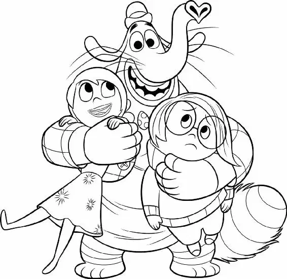

“Oh, look at you,” the elephant figure cried as he grabbed one particular memory. “You’re a keeper!”
Joy continued to watch him from a distance.
The figure was so intent on picking memories that he didn’t see Joy until she stepped forward. “Hello!” When the elephant locked eyes with Joy, he froze—and then ran. He tried to get away, but Joy chased him until he reached a wall and began frantically to try to climb it. He was a strange-looking pink creature with a long trunk, whiskers, and a fluffy striped tail. He wore a checkered coat that was too small for his body and had a tiny hat perched on top of his head.
“Excuse me,” Joy said, trying not to scare him more than he already was.
The creature jumped, startled, and screamed. “Ahh!” Feeling cornered, he grabbed a random memory off the wall and threw it at Joy. “Ha ha, so long, sucker!” But he ran right into a cart of memories and fell to the ground, taking the memories with him.
“Wait,” said Joy, recognizing his face. “I know you.”
“I get that a lot,” he said nervously. “I look like a lot of people.”
Joy gasped, finally placing his face. “You’re Bing Bong, Riley’s imaginary friend!”
“You do know me!” Bing Bong said, pleasantly surprised.
“Riley loved playing with you!” Joy exclaimed.
“Oh, you would know. We’re trying to get back to Headquarters…”
“You guys are from Headquarters?” Bing Bong asked.
“Well, yeah. I’m Joy. This is Sadness.”
“You’re Joy? The Joy?” Bing Bong gasped. “Without you, Riley won’t ever be happy. And we can’t have that. We gotta get you back. I’ll tell you what, follow me!”
Joy thanked Bing Bong for his help as the three of them walked down a long corridor of memory shelves. “It is so great to see you again,” Joy said.
She remembered how Riley and Bing Bong had held concerts with pots and pans as their instruments; how they had raced each other, with Bing Bong on the ceiling and Riley on the floor; and how Bing Bong’s red rocket ship wagon ran on song power.
Joy even remembered the theme song Riley made up that powered the rocket ship. Bing Bong and Joy sang the happy tune together as Sadness finally took a good look at him. “What exactly are you supposed to be?” she asked.
“You know, it’s unclear,” Bing Bong said. “I’m mostly cotton candy, but shape-wise, I’m part cat, part elephant, and part dolphin.”
“Dolphin?” Joy asked. She didn’t really see much evidence of a dolphin in Bing Bong.
Then he let out a high-pitched noise that sounded just like a dolphin!
Joy asked Bing Bong what he was doing in the memory shelves. Bing Bong explained that there wasn’t much need for an imaginary friend in Riley’s life lately. He thought maybe if he could find a really good memory, Riley would remember him and he could be part of her life again.
“Hey, hey, don’t be sad,” Joy told him. “When I get back to Headquarters, I’ll make sure Riley remembers you.”
Bing Bong was thrilled. He began to dance around in excitement, but ended up tripping over his own feet. “Dooooh!” he cried.
Joy and Sadness watched as pieces of candy fell out of his eyes. “What’s going on?” Sadness asked.
“I cry candy,” Bing Bong said, in tears. “Try the caramel, it’s delicious.”
Joy munched on one of his sweet candy tears as she shifted the core memories around in her arms. The spheres were heavy and slippery, and it was a challenge keeping them all together.
“Oh—here, use this,” Bing Bong said, dumping the contents of his little bag onto the floor. Joy and Sadness watched with amazement as an insanely large pile of random stuff fell out—memories, three boots, a hissing cat, and even a kitchen sink! “What?” Bing Bong shrugged. “It’s imaginary.”
“This’ll make it a lot easier to walk back to Headquarters,” Joy said with relief, putting the core memories safely into the bag.
“We’re not walking. We’re taking the Train of Thought!” Bing Bong led them out onto a cliff edge and pointed at the train speedily chugging toward Headquarters in the distance.
“The train, of course!” Joy exclaimed. “That is so much faster!”
Bing Bong told them about a station in Imagination Land, another part of Riley’s Memory World, where they could catch the train. He said he could take them there. “I know a shortcut,” he said proudly. “Come on, this way!”
“I’m so glad we ran into you,” said Joy.
Bing Bong led the way to a huge bunker—like building. They looked through a window and straight out another window on the opposite side of the building. There was the train station.
Bing Bong opened a large, sturdy hatch door. “After you.”
Joy took her first step into the building but stopped when Sadness called her.
“I read about this place in the manual. We shouldn’t go in there,” Sadness said.
“Bing Bong says it’s the quickest way to Headquarters.”
“But, Joy, this is Abstract Thought,” Sadness explained.
“What’re you talking about?” asked Bing Bong. “I go in here all the time. It’s a shortcut, you see?” Bing Bong pointed to a sign hanging above the door and spelled it aloud: “‘D-A-N-G-E-R.’ That spells ‘SHORTCUT.’ I’ll prove it to you.” Joy and Sadness watched as Bing Bong climbed through the hatch.
